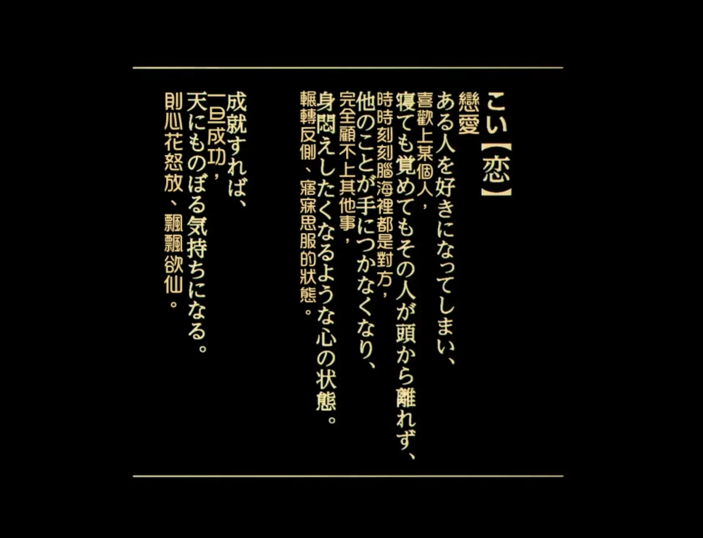

Zine#60
追加與回顧笔記法、通風、天國拯救
🎵 ふたたび - 久石譲
目錄
News | Article
Browser vertical tabs are great (and they’re older than you think!) by Dan Q
無論垂直分頁起源於何處，它們都非常棒，我超級喜歡。以下是垂直分頁之所以厲害的原因：
- 如果你（像我一樣）傾向於開啟大量分頁，垂直分頁捲動起來會更容易。
- 同樣地：假設你使用的是橫向閱讀的語言，你可以更輕鬆地閱讀標題。
- 在寬螢幕（甚至是超寬螢幕！）顯示器上，你很可能會有剩餘的水平空間，因此垂直空間相對珍貴：垂直分頁有助於最大化你的可用螢幕空間。
俺也一樣。
The Midtown Butcher by Andy Weir
有趣的短篇小說，看得還有點紧張。
See also: Antihypoxiant
顔文字要怎麽做無障礙啊 by 吳量
沒考慮到的一個問題，以後我會注意的！
目前打算這樣：
- 有含義：
<span role="img" aria-label="開心揮手">(ﾉ>ω<)ﾉ</span> - 沒含義，僅裝飾：
<span aria-hidden="true">(ﾉ>ω<)ﾉ</span>
在 Emacs 裡可以定義 Snippet 來生成。
順便我也挖了挖吳量寫的文章，我也挺喜歡的，也分享在這吧，感興趣請去他部落格看看，內容也蠻有趣的：
-
現在這個站它好像什麼都發。無所謂啦。大家看別人做的博客也好，看別人寫的書也好，都是一上來直接看到成品，所以做新手的時候會「倒搭寶塔」，先從塔尖蓋起：先規劃出博客要圍繞哪個主題，然後再寫，然後無盡拖延。我花了很久意識到真實過程多半是反過來：先寫札記、眉批、夢話、潦草的筆記、主題不定的草稿，攢多了主題慢慢會浮現出來。（意思就是一開始其實可以不知道要寫什麽，就硬寫。）
（很刺激吧。像聖母無玷始胎一樣，你關心的主題在無知覺間借你的身體降生。）
-
我還不會用 RSS 的時候，關注博客的方式是收入瀏覽器書簽欄，等到有空的時候一個一個點開訪問。（集勤快與遲鈍於一身之人。）這些博客都有 RSS Feed，但是我當時不知道 RSS 是什麽，我想這是給別人用的，看到 RSS 符號就淡淡地走開。
我以前也不知道我可以乘地下鐵。（成長於一個至今沒通軌道的地方。）我想這是給別人用的。去所有地方都是踩車。看到地鐵站淡淡地走開。
有點…好笑。
- 有含義：
The append-and-review note by Andrej Karpathy
文章分享了一種「追加與回顧」的笔記方法，具體做法是：
只用一個笔記文件，文件最好能方便地多端同步
維護多則筆記，還要管理並將它們分類到資料夾和層層相套的子結構中，會耗費太多心力。只有一則筆記，按 CTRL+F 搜尋就簡單又方便。
- 新的笔記追加在最上方，可以適當加一些 tag 方便查找，例如
book:、moive: 有空時就回頋一下
隨著新內容不斷加到最上方，其他內容便像受重力牽引般逐漸沉到下方。偶爾我會往下捲動、快速瀏覽筆記。如果發現有什麼值得繼續留意，就簡單複製貼上，把它移回上方。有時候，遇到彼此相關的筆記，我會把它們合併、整理、分組或修改。我很少刪除筆記。不值得反覆關注的內容自然會繼續往下沉。它們並沒有消失，只是不值得一直放在心上。
這個笔記文件就是一個可以隨時且方便打開的 inbox，想到什麼就往裡面先放著，等有空再來处理。
把事情記下來時，我覺得自己可以立刻放下它、清空工作記憶，並全心投入當下的其他事情。我相信之後回顧時，可以重新檢視這個想法，並在時間較充裕時好好整理。
我之前記一些临時笔記會分到不同的文件裡，多個文件確實會增加心智負擔，都放在一個文件裡確實會更好，我會實踐一下這個方法。
Why Plain Text Is Still One of the Best Technologies We Have by Dead Parrot BBS
關於純文本的好处，它簡單、容易編輯修改、容易保存備份、容易搜索⋯⋯它是一種 50 年後你依然可以正常訪問的格式。与之相對的是一些專有格式，如
.doc、.docx、一些雲端笔記獨有的格式等，這些格式衹能用特定的軟件才能查看，容易受制於人。See also: The Case for Boring Technology by Dead Parrot BBS
Encounter by Changhai Lu
一場三十年後的意外重逢。
A Midnight Poem by Robert Lützner
Oh, how I rue that late coffee cup. (唉，我真後悔那杯喝得太晚的咖啡。)
哈哈，有時很晚喝咖啡，躺在床上睡不著，我也會這麼想。詩裡用到的 Help Me Font，給人一種抓狂的感覺，用的真不錯。
雜談 #8 by 皮皮
關於 G 這個字母，看完之後就回不去了
The letter G is just a spinning arrow.
I don't want the details by Michael
幾個月前，我被拉進一場電話會議，與工程部門的對口同事及其主管（碰巧也是我們的工程資深副總裁）一起討論一件不該出差錯的事。事情出了問題。雖然並非災難性事件，但重要到讓我得和一位資深副總裁開會。
我開始解釋事情是怎麼發生的，對方卻打斷我說：「Michael，我不想聽細節。」
對方接著說：
「我知道，如果我們深入討論細節，背後的原因都會很合理。你會解釋發生了什麼，我會明白大家為什麼做出那些決定，也會體諒你。
但之後同樣的事還是會再次發生。
所以我不想聽細節。我想知道我們要做出哪些改變。」
一開始，我覺得「我不想聽細節」聽起來有些輕蔑。他們不了解細節，怎麼能做出明智的決定？
後來我明白，「我不想聽細節」並不是輕蔑的表現。這位主管相信我們有能力處理問題，並且是在說：「我已經相信你了。現在來談談接下來該怎麼做。」
想解釋問題細節，部分原因是因為怕擔責和怕失去信任吧。如果上級并沒有指責的意思，也很相信下屬，或許就可以省點口舌，把重點放在怎麼避免問題再次發生。
給問題找到一個解釋，會讓人鬆一口氣，讓問題不再紧迫。但解釋不是解决方案，要思考的是，如果同樣的問題再次發生，做出什麼改變會讓結果不同。
如果你的事後檢討滿是「我們應該早點讓支援團隊參與」和「我們需要加強溝通」這類句子，或是我個人最愛的「下次我們會更小心」，那你手上只是一堆披著進步外衣的願望。
Inbox Zero for Privacy, not Productivity by マリウス
你的郵件可能包含很多你的個人信息，如果被入侵了可能會泄露很多信息。作者建議每次处理完郵件後可以考慮將它归檔到本地，從你的郵箱裡移除，郵箱只作為一個臨時存放點，這樣可以减小泄露風險。
注重隱私的「收件匣歸零」做法其實相當簡單：處理完一封電子郵件後，不只是把它移到另一個資料夾，而是將它從郵件伺服器移到由你親自掌控的儲存空間。伺服器上只保留你的收件匣，以及你尚未處理的郵件，除此之外不留任何東西。所有已處理完的郵件都儲存在你自己磁碟上的本機信箱中；理想情況下，這個信箱應採用靜態加密、做好備份，而且完全無法從網際網路存取。對大多數人而言，只要做出這項簡單的行為改變，就足以大幅降低郵件服務發生資料外洩時可能遭受的損害，而且實施成本也不高。
文章還分享了一些常見郵件客户端的相關操作。
Donating to open source by Chris
你知道還有什麼既有趣又要花錢嗎？開源。這時我才意識到，我不該把捐款給開源專案當成慈善；相反地，我應該從自己的零用錢中支出，也就是預算裡用來買酷炫小玩意的那部分。如果我有個需要裝備的嗜好，我就會拿零用錢買裝備。如果個人專案需要新工具，我也會用零用錢購買。用同一筆錢來支持開源，才合情合理。
關於選擇捐款的項目，作者是這麼判斷的：
- 這個計畫對我的個人生活有多重要？如果它不存在，我的處境會變得多糟？
捐款的邊際效益有多大？
有些計畫能迅速收到一大筆錢，並立即用來做有用的事——這代表捐款的邊際效益很高。依邊際效益由高至低來看，有些計畫採用長期合約，需要時間才能運用意外收到的捐款；接著是沒有任何用途可供支出的計畫，它們會把額外捐款存作備用金。還有一些計畫的邊際效益為零：它們完全不接受金錢捐款。
- 這個計畫受到其他捐款者忽視的程度有多高？
Midnight Reading: 📮 World Postcard Day by Renkon
欣賞一些日本的明信片。
Exploiting Fail2ban “portscan” permablocks over HTTP for denial-of-service by Dan Q
有的網站會設置防火墙，當某個 IP 表現出爬蟲的特點，就會將這個 IP 封禁，這麼做的出發點是防护自己的服務器，但這可能會被利用。例如有人做一個這樣的頁面：
<img src="//bobs-favourite.test:3000/" width="1" height="1" alt=""> <img src="//bobs-favourite.test:3001/" width="1" height="1" alt=""> <img src="//bobs-favourite.test:3002/" width="1" height="1" alt=""> <img src="//bobs-favourite.test:3003/" width="1" height="1" alt=""> <img src="//bobs-favourite.test:3004/" width="1" height="1" alt=""> <img src="//bobs-favourite.test:3005/" width="1" height="1" alt=""> <img src="//bobs-favourite.test:3006/" width="1" height="1" alt=""> <!-- ...and so on... -->然後引导合法的用户訪問這個頁面，此時這個人的訪問就很像爬蟲，他的 IP 就被意外的封禁了。相當於可以利用這個機制，阻斷合法的使用者訪問你的服務器。
About comments that only communicate feelings by Protesilaos
作者有時會收到一些單純在表遠情緒的留言，但作者對這些留言也無能為力，他不知道這些情緒是何以產生的，他也不可能滿足所有人的情緒。僅表達情緒，作者也無法回應什麼，更好的做法是給出充足的論點。如果給不出論點，那也許是還沒把問題想明白，應該再去想想，或者去詢問也行；而如果僅是想發泄自己的情緒，想對作者進行情緒操控，那作者也沒必要去理會。
當你告訴我，我發表的某些內容影響了你的情緒時，你其實是在承認自己沒有論據。如果你有論據，你就會提出論據，而不是表達感受。正如我先前所說，就連你自己的感受，你也未必完全了解。不過我也解釋過，無論你選擇如何表達，我仍然有興趣了解你的價值觀。
現在，我要清楚告訴你，你那些幼稚的小伎倆究竟是在做什麼。這就是情緒操控。你想讓我覺得自己做錯了什麼。你試圖在我心中灌輸罪惡感，希望我不是順從你的立場，就是——更可能的情況——不再說出自己的想法。
所以，這就是解決方案。如果你不同意我的看法，請告訴我你的論點是什麼。如果你對此深有感觸，就開個部落格，把你想說的一切都寫下來。這是有建設性的。現在，你開始調整自己的態度；在這個過程中，你就會明白，訴諸感受是多麼荒謬，而任何善意的人都不可能滿足這種訴求。
I Lost Myself When I Lost Hong Kong by Tiffany Huang
文章記录󠄃了作者的一些感情和生活經歷，虽然文章有點長，但作者文笔挺好的，不知不覺就看完了。也可能是想知道作者和那個男人的結局，被吸引著一直看下去了吧。
於千萬人之中遇見你所遇見的人，
於千萬年之中，時間的無涯的荒野裡，
沒有早一步，也沒有晚一步，
剛巧趕上了，那也沒有別的話可說，
惟有輕輕的問一聲：「哦，你也在這裡嗎？」
《愛》張愛玲
也會讓我想起 Louis Vuitton SoundWalk: Hong Kong 裡的那個故事，那個男孩。結束時的那首曲子 ⸺ 在到处之间找我 ⸺ 也挺適合文章中的故事的。打算也找些張愛玲的書看看。
I paid people to try and follow my README by Terence Eden
花錢找用户測試 README，也是不錯的方法。
Cool Bit
~ rip.so - the digital graveyard ~
網路世界的更迭極快。前一天它們還在我們的桌面，隔天伺服器就已關閉、網域被侵佔、圖示也從系統匣中消失。有些死於經營不善，有些死於收購，有些則死於被時代淘汰。有些在技術層面上雖然還活著，但靈魂早已遠去。這個頁面是為了紀念它們所有人。
我們在此埋葬我們的英雄。為他們斟上一杯 56k 數據機的哀思。
-
一些火柴盒貼畫，挺好看的。
-
Unicode 18.0.0 就增了 Seal (= “Small Seal”) ⸺ 小篆字符集 ⸺ 酷！不過顯示出來要字體支持才行，例如 lxgw/LxgwSeal。
(via 二十年前部落格圈的簡體繁體議論 by 我)
-
刺綉風格的作畫網站，挺好看的。
-
一個飲料的宣傳網站，頁面滾動效果做得很棒。
-
你可以在頁面上填寫詛咒或祝福，也能看到其他人提交的內容，挺有趣的。頁面上紅蓝色對比度太高了，看得有點難受。
A spell does not rely on the infrastructures that have already failed us. A spell makes desire real, fulfills it, not through the depletion of money or gas, but through the most elemental of currencies — a gesture. The accumulation of gestures, a physical insistence, is what empowers the spell.
咒語并不依靠那些早已讓我們失望的基礎設施。咒語使慾望成為現實，讓它得以實現；靠的不是耗盡金錢或燃料，而是最基本的一種貨幣——一個動作。動作不斷累積，身體持續堅持，這才是咒語獲得力量的方式。
-
Jack 的個人主頁，做成了一個 8bit 的遊戱，挺有特色的。
-
可以給別人發一張電子明信片，提交後會在 7 - 14 天送達。
-
Ptree 是一款互動式生命之樹探索工具，將科學分類與現存及已滅絕生物的生物學知識連結起來。探索生物之間的親緣關係、牠們的棲息地，以及彼此共有的特徵。比較不同物種或整個類群，追蹤生態關係，並在整個演化支系中發掘規律。在繽紛色彩與各項測量數據背後，科學證據始終觸手可及。
Pure Street Photography Awards 2026 Winners & Finalists
2026 年純粹街頭攝影獎，入圍名單裡的也不錯。
Astronomy Photographer of the Year 2026
2026 年「年度天文攝影師」獎。
Comedy Wildlife Photography Awards 2026
喜劇野生動物攝影獎。
-
2026年，科学家完成了首张雄性果蝇神经系统的完整连接图。接下来，我们将展示这张图，并讲述谷歌研究团队如何运用人工智能参与绘制。
我的電腦瀏覧這個頁面有點卡，加載的東西太多了。
Lobster is Lobster — Guess the Language
一個遊戱，給你一句例句，然後讓你猜測某個單詞的語言。
例如：
House is house in english. casa is house in ____
答案是 Italian。
-
關於「死亡之舞」，這是中世紀晚期以來一種表現死亡普遍性的寓意藝術類型，網站整理了很多相關信息。
-
Web 時光機，回頭看看以前 Web 的模樣，網站做得挺有趣的。
-
你在一個房間裡，似乎是潜艇裡的房間，房間裡有的物件可以交互。這是做什麼的，我也不知道。標題翻譯過來大概是「你的空間」。
-
網站整理了很多早期的橫幅廣告，你可以用它們做一首拼接詩。
-
隨機生成 4 行打油詩，并找到對應的 TV 片段与之匹配。或者換個說法，其實就是用 TV 節目裡的台詞組合拼接一段 4 行詩。
-
新一年的 Weird Web October，這是為期一個月的命題網站創作活動，去看看大家的創意吧，或者你也可以參加試試。
Scrubjay by Everest Pipkin
就像是一個網頁拼貼板，你可以從任意網頁拖拽內容到 Scrubjay，然後可以隨意調整這些內容，組合成你喜歡的樣子。
iNCYNC by Terry Riley
play multiple performances of Terry Riley’s In C simultaneously — adjust rate to sync tempos.
In C 是 Terry Riley 於 1964 年創作的作品。它是美國作曲家最成功的作品之一，也是極簡主義音樂的開創性代表作。樂譜指示不限人數的演奏者，在引導式即興演奏中反覆演奏一系列 53 個旋律片段。
可以同時播放三段音頻，調整它們的節拍、音量，組會成一段新的節拍。
-
數字列車，模拟乘坐列車的畫面。可以切換不同國家的列車，能看到不同的風景。還挺有感覺的。窗外的畫面搞不好是實录󠄃的。
Long Hoang (Lyo) – Designer & Developer
Long Hoang 的個人主頁，操作一輛坦克在他的世界裡探索。挺有趣的，還融合了塞尔達裡究極手的操作。但對於不擅長操作的人來說，不一定有耐心操作半天去看作者的個人信息。
DJDB | Daejang Dakbal Archive · 대장닭발
「我在韓國城南市經營了一家雞爪餐廳，開了 1,330天，上週歇業了。我沒有發告別文，而是為它建立了一座檔案館：每則顧客評論都排版得像《聖經》（年份是各卷書，店主的回覆則用紅字呈現）、一本在最後一節之後仍持續書寫的留言簿、一座翻頁式時鐘、一條可以滑動瀏覽的 206 張照片時間軸，還有一個讓你扮演雞爪的小跑酷遊戲。」
ThePHOTO.one — One photo. One photographer. One showcase.
ThePHOTO.one 是一個攝影作品展示平台，每次只讓一張影像擁有應有的展示空間。每張入選照片都會成為此刻的焦點：所有人都看得到，並且獨自呈現在螢幕上，直到另一張照片接替它的位置。
理念很簡單：讓每張影像都擁有充足的空間與時間，供人細細欣賞，而不是立刻淹沒在其他作品之中。
-
The Voynich Manuscript (《伏尼契手稿》) 是一本手寫書籍，成書於 15 世紀初，裡面滿是植物、星辰，以及在水池中沐浴的女子圖畫。這本書收藏於耶魯大學拜內克古籍善本圖書館，館藏編號為 MS 408。至今沒有人能讀懂其中的文字。
看不懂，但裡面的手繪圖片挺好看的，像是現在一些人做的手帳。
-
陶藝家設計的不是碗或花瓶，而是一道曲線。這一條線繞著軸心旋轉，就形成了整個器物的造型。
你可以調整一條曲綫，網頁會基於曲綫生成不同的陶器。玩起來一般，但我覺得上面這句話說得挺對的。
-
老鼠曲棍球遊戱，挺好玩的，還挺刺激。
-
停車模拟器，現實中我不擅長停車，沒想到在遊戱裡我也是苦手。
Blog Related
- Make your website printable - a short guide by Juha-Matti Santala
- Static Site Generators for Beginners by Brennan Kenneth Brown
A more privacy-friendly blog by Vincent Bernat
網頁記录󠄃了作者為了讓博客更尊重讀者隱私做的改動。
anhvn by Anh
讓人眼前一亮的首頁！ (via Over/Under #86 with Anh by Hyde)
她的 旧版首頁 更酷！
Pico.sh has been great by Sal
pico.sh 提供了 pages 服務，類似 GitHub Pages，不過它是用
rsync,scp去發佈更新的，好处是只要更新變化的內容，而不用重新执行一次全量構建。Let's make /photo pages by Robert Birming
我之前提過，我很希望能在部落格上看到更多照片。即使你的部落格主要以文字為主，偶爾放上一張照片，對我這個讀者來說也是很棒的驚喜。
在大多數獨立平台上維護相簿都有點麻煩。我試過各種方法，但最後總是落得一樣的結果：我忘了更新。
所以，我決定建立一個
/photo斜線頁面。就像/now頁面一樣，不過專門放攝影作品。一次一張照片，只要有新照片想分享，我就會換上去。不錯的想法，我也許會加一個這樣的頁面，等我有照片想發再說。我覺得也不一定是照片，任意圖片都可以，最好能加一兩句描述。
另外作者說得很對，頁面多了，經常會忘了更新，尤其當維护起來麻煩時，更是如此，所以要想辦法讓維护盡可能輕鬆，才能長久保持更新。
Anti-Patterns in Software Blogging by Michael Lynch
文章主要是關於技術博客寫作的：
- 開篇避免冗長，開頭几句就應該讓讀者知道文章是講什麼的，他能收获什麼
- 思考讀者會是誰，他們知道些什麼，基於讀者的水平調整用詞，不要假設讀者擁有與你完全相同的知識，適當解釋一些術語
- 不要過度依赖連結，適當解釋內容，而不是讓讀者點開連結看几千字的文檔去了解前置知識。連結是可選的补充內容，而不應該強求讀者要看完連結才能讀懂文章的內容
- …
Tutorial | Resource
How to read code by sean goedecke
TL;DR: 先掌握整體結構，再看子結構，最後才讀細節。多讀几遍。
摘录
我讀過最好的程式碼閱讀文章是這篇文章這篇探討如何閱讀數學論文的文章，兩者的結構相似。作者介紹了一種稱為「二分掃描」的技巧。與其慢慢地按順序閱讀，不如分幾輪閱讀：先掌握整體結構，再看子結構，最後才讀細節。
對程式碼而言，這代表要跳著讀。我喜歡挑一條重要的路徑（例如差異內容中新功能的正常執行路徑），追蹤各個函式如何互相呼叫，只為掌握整體流程。等我對流程有了充分了解，才會仔細查看這些函式實際在做什麼。
我通常會讀好幾輪，每輪追蹤不同的線索。我會挑一個函式或一段資料，試著弄清楚它如何被使用，並一路追查到多個呼叫位置（包括差異內容之外的部分）。對於小型差異，我只要用 Ctrl+F 搜尋函式名稱，就能在各處跳轉；對於大型差異，我會在編輯器中開啟，並按住 Ctrl 點擊，方便瀏覽。我會努力只專注於眼前正在看的內容：其他一切都先當作黑箱。
等我確信自己理解了差異內容，才會坐下來仔細從頭到尾閱讀。這次閱讀的目的，不太是了解程式碼結構——到這個階段，我應該已經掌握了——而是找出之前跳著讀時沒注意到的奇怪之處。如果發現任何異常，我就會回頭繼續分輪檢視。
這聽起來可能很花時間。但事實上，每一輪都很快，因為我不會費力地逐行琢磨程式碼。
文章裡分享的 Radimentary 的 Of Math and Memory, Part 3 (Final) 也推薦一讀。
TIL how to deeplink all the things by The Autodidacts
文章分享了如何連結一個 mp4 視頻中的片段，可以這樣：
https://example.com/test.mp4#t=250,300
語法參考見：Media fragments。
Shock Ventilation Explained: A Survival Guide for Newcomers
教你怎麼有效開窗快速通風，通風有助於减少室內細菌和二氧化碳的堆積。 (via Battle or skedaddle, palette fun, new Instax and mysterious figure, I baked two breads by Hollie)
不要只開一扇窗，而要形成真正的穿堂風（穿堂風）。同時打開公寓兩側的窗戶，就會產生吸力，將室內的污濁空氣直接排出建築物。只要正確對流通風，通常只需兩到三分鐘就能完成空氣交換。
P.S. 如果想驗証風力或是添點樂趣，還可以掛個風鈴，這樣通風時還能聴到輕脆好聴的鈴聲。
Code Related
Periodic Table of HTML Elements
HTML 元素周期表，想法不錯。
- 12 CSS features you can use today with no build step by Flavio Copes
New in Chrome 154: iframes that automatically resize themselves to their content by Bramus
好特性，期待主流瀏覧器都全面支持的那天。
The root scroller and how not to lose it by Polypane
所謂的 root scroller 是：
當內容高度超過視窗 (Viewport )時，整個視窗就會變成一個捲動容器 (Scroll Container)。規範中稱之為視窗的捲動框 (Scrolling Box)，但瀏覽器工程師通常將其稱為根捲軸 (Root Scroller)，
也就是視窗 (Viewport) 的滾動條，它有一些 瀏覧器自帶的特性，應該盡量去利用它，但有時會不經意間讓它失效，文章分享了 一些常見的失效場景，以及如何去修複。
Blurry before beautiful: image previews for the web by Patrick Brosset
<img previewsrc="tiny-blurry-preview.png" src="full-image.avif">有個提案建議給 <img> 增加一個
previewsrc用來呈現預覧圖，當圖片比較大時，可以先加載顯示体積更小的預覧圖。See also: Some thoughts on HTML’s proposed previewsrc attribute by Terence Eden
My favorite Interop 2027 proposals
以下是我認為目前對網頁開發者社群特別重要的一些 Interop 2027 提案。看看這些提案，如果有你喜歡的，請點選投票連結，按 👍 表情符號表示支持。
Opening the can of tooltips by Patrick
一些關於 title、tooltip 的思考，以及分享了用 ::tooltip 去給 tooltip 自定義樣式的提案。
Canvas flame animation: flicker with layered sine waves by Carmen Ansio
文章分享了如何用 Canvas 做一個火柴點燃的動畫。
Half Past Fetch by Gabor Koos
用 Fetch API 發起一次請求，一般會這麼寫：
const response = await fetch(url) // awaits the headers const body = await response.json() // awaits the bodyawait fetch(url)完成後，拿到的是 Response header，但此時還沒获取到 body，可以基於 header 的值决定是否要获取 body 及後續的操作。例如，如果 header 返回的狀態碼是 404 或 500，也許就沒必要請求 body，可以及早關閉連接。文章還分享了其它一些 Fetch API 的細節。
Understanding Bidirectional Text: A Guide for Developers by Mojtaba Seyedi
當一段文本同時存在書寫方向不同的語言時，可以用 dir (
dir="auto") 、 <bdi> 、 Unicode Marks 去修正文字方向。CSS-Only Custom Elements by Burton Smith
定義:
my-card { display: grid; grid-template-areas: "media" "header" "body" "footer"; gap: 12px; &[compact] { gap: 4px; } [slot="media"] { grid-area: media; } [slot="header"] { grid-area: header; font-weight: 600; } [slot="body"] { grid-area: body; } [slot="footer"] { grid-area: footer; } }使用:
<my-card compact> <img slot="media" src="..." alt="" /> <h3 slot="header">Release notes</h3> <p slot="body">Version 2.4 adds dark mode support.</p> <a slot="footer" href="/changelog">Read more</a> </my-card>A React trick to improve exit animations by Max Barvian
在 React 中，觸發退出動畫的更新往往也會影響正在退出的元件內容，导致在執行退出動畫時內容在變，有種在閃烁的感覺。
作者的做法是將 React 裡的 Suspense 組件封裝成 Freeze 組件，利用 Suspense 會繼續渲染已暫停的子樹，但不會將其變更提交至 DOM 的特性，避免了內容的變化。
AI Related
☞ 跳過 AI 部分
A quote from voxium by Simon Willison
自從我在這家大公司開始新職位以來已經半個月了。這裡沒人知道任何事情。規格、代碼、測試、PRD、工單、工單的解決方案、報告等等，所有東西都是由 Claude Code 生成的。我團隊裡沒人喜歡這樣。他們被強迫盡可能多地交付。我多次聽到高層管理人員說，推送代碼並不是瓶頸，所以為什麼我們這麼慢？人們每天工作 12 到 13 個小時，就為了按個回車鍵。沒人在閱讀任何內容。這裡每個人，從 L1 到 L7 工程師，簡直所有人都在做同樣的事情：跟 Claude 對話。
Jev introduces a new shape of LLM—System One, aka Decision Models by Simon Willison
關於 Jev 的介紹。
關於 Jev，我發現有些令人不安的地方在於，它在很大程度上代表了向黑箱機器學習系統的進一步倒退。
大型語言模型（LLM）本身就已經是黑箱了——你可以要求它們為自己的決定辯護，但你無法保證它們所說的話是有用或準確的。
Jev 甚至連這點都不給你：輸入你想要的所有文本，你唯一能得到的只是一個浮點數。如果 Jev 將某個內容標記為垃圾訊息，究竟是哪些內容信號觸發了它？
這也意味著對偏見的擔憂應該被放在首要位置。我真心希望沒有人用 Jev 來篩選求職者——那個浮點數可能隱藏了模型中各種看不見的偏見，而要透過實驗來拆解這些偏見將會是一件棘手的事情。
這確實是個問題，它能給你完成分類，但你可能不清楚它的分類邏輯。
ChatGPT now knows what you do on other websites via ad collector by Buchodi
和 Google、Meta 等公司一樣，OpenAI 現在也會用 Cookie 收集你在其他網站的行為。
I Am a Flat-Rate Monthly Responsibility Service by Mat Duggan
如果你喜歡在工作時測試並迭代你的理論，軟體開發就是一場美夢。我不需要實驗室或設備，除了隨便一台筆記型電腦外，什麼都不需要。這就像當一名科學家，卻只需要一支試管、一個燒杯，以及桌上幾滴滾動的水銀。
我的新工作是看著機器人工作。然後我需要閱讀大量關於機器人在做什麼的資料，以便我能在接到通知的瞬間，從它手中奪回控制權並修正方向。把這稱為「程式編寫」簡直是場鬧劇。我更像那些可憐的靈魂，必須坐在自動駕駛汽車的駕駛座上，雙手懸空，滿頭大汗，等待機器人試圖撞向行人。
事實上，我是一家 SaaS 供應商，而我提供的服務就是責任。我是一項定額月費制的責任服務，同意對機器人的輸出承擔全部責任。我是那個有血有肉、能讓你當面指教為何某事成功或失敗的人。我會道歉，我會嘗試修復，我也會承擔責任。
We Didn't Start the Scaling by Domenic Denicola
作者用 LLM 做的一個 MV，回頋了 AI 的發展，挺有趣的。
See also: “We Didn't Start the Scaling” by Domenic Denicola
一些关于开发的杂谈话题 - 代码审核 by onevcat
如今很多人都在用 Agents 寫代碼，Agents 寫出來的代碼量往往都很大，開發者還應讓去 review 這些代碼嗎？文章是作者對當下是否要 review 以及如何 review 的一些想法。
TL;DR：文章認為依然要 review，但主要是 review 設計意圖、設計文檔、開發計劃以及最終的產出結果；至於代碼則讓 Agents 之間相互 review，而人不再需要參与其中。
Niko1221/Strata: Qwen3.8-Flash-Next on any consumer hardware
Strata runs Qwen3.8-Flash-Next on a normal PC. This is a large, smart AI model that usually needs a server. It chats, writes code, reads pictures and works with your apps and coding agents. Nothing leaves your PC.
-
海报生成的 Prompts 集合。
-
AI 油畫，我不喜歡 AI 畫的油畫，但有趣的地方在於你可以觀看 AI 的作畫過程。
Tool | Library
-
從 HTML 中擷取關鍵路徑（首屏）的 CSS，將其內嵌，並以非同步方式載入其餘樣式表，讓瀏覽器無須等待完整的樣式表載入，就能繪製首屏內容。
获取首屏關鍵 CSS，加速首屏加載。
-
排版隨含義變化，而非依照標記語法調整：負面內容顯示為紅色，重要內容以粗體呈現，出人意料的內容醒目標示，語氣審慎的內容則以斜體呈現。
演示: A font that reads what you wrote
缺點是不適用於中文。
-
An HTML linter for all markup developers.
-
An open source, self-hosted implementation of the Tailscale control server.
-
Panda is a universal styling solution for the modern web — build time, type safe, and scalable CSS-in-JS.
-
Debloat macOS: turn off Apple Intelligence, analytics, ads and pop-ups. A native app and CLI, and every change can be undone.
-
你每截一张图，它都会挂到屏幕顶上的一根绳上。把指针停在菜单栏，绳子就滑下来；移开，它就收起。
把截圖像晾衣服一樣掛在屏幕頂部的一根繩子上，挺有趣的。
Emacs
- emacs-为重复任务添加自定义工作日判定 by TomoeMami
Repeat mode finally made Emacs navigation click
給
forward-char、forward-word等開啟repeat-mode，使得重複使用時更方便，就不用一直按著 Ctrl 或 Meta。我也加上了，但用起來還不習慣。
配置
(use-package repeat :hook (after-init . repeat-mode) :config (defvar-keymap spike-leung/char-repeat-map :doc "Repeat map for char related commands." :repeat t "b" #'backward-char "f" #'forward-char) (defvar-keymap spike-leung/word-repeat-map :doc "Repeat map for word related commands." :repeat t "b" #'backward-word "f" #'forward-word) (defvar-keymap spike-leung/paragraph-repeat-map :doc "Repeat map for paragraph related commands." :repeat t "{" #'backward-paragraph "}" #'forward-paragraph) (defvar-keymap spike-leung/sexp-repeat-map :doc "Repeat map for sexp related commands." :repeat t "b" #'backward-sexp "f" #'forward-sexp))-
此套件提供了 typewriter-mode，這是一個小型的輔助模式 (minor mode)，它刻意極度限制 Emacs 的功能，以提供盡可能接近嚴格「只能向前」的打字機體驗。有些人發現，缺乏編輯功能反而能促進專注，讓某些類型的創意寫作變得更加充實。
可以配合 rnkn/olivetti 一起用。
-
用 karthink/gptel 、ggml-org/llama.cpp 來使用本地模型。
Binding the SPC key in Dired and IBuffer by Charles Choi 최민수
macOS 上，瀏覧文件時按 SPC 可以預覧內容，作者類似的功能也集成在了 Emacs 裡。
What is spook? by Raymond Zeitler
在發郵件前执行
spook插入一些隨機的單詞和短語，去混淆視聴，去對抗郵件監聴。主要是利用了
cookie-insert實現隨機插入的。How I built a WhatsApp client for Emacs without an API by Andros Fenollosa
macOS 上 WhatsApp 沒有提供任何東西給外部程序交互，但作者却成功把它和 Emacs 連接上了。作者的方法衹能在 macOS 上有效，通過讀 WhatsApp 的數據庫查看消息，通過 Shortcuts 發送消息。
Fix nested Emacs frames by Ankit Gadiya
Emacs sets an environment variable
INSIDE_EMACSfor shells and subprocesses. The script use this variable to check if it is launched from Ghostel and use the--reuse-frameflag to open the new buffer in the current frame.Customize Me by Marcin Bielewicz
文章分享了 Emacs 裡
Customize指令的使用，可以方便查看和修改 Emacs 中可定製的配置。Emacs Lock mode by Marcin Borkowski
用
emacs-lock-mode可以鎖定一個 buffer，避免 buffer 被意外關閉。除非解鎖，否則也不可以退出 Emacs。How to Make the Emacs UI Feel More Responsive by James Cherti
修改一些配置讓 Emacs 感覺起來響應更快。
Emacs Lisp: Parse page ranges, insert issue references by Sacha Chua
文章分享了個技巧，讓 5-7 變成 5,6,7，用於插入連續的數字。也可以用 abo-abo/tiny 來實現。
See also: Still More On Entering Ranges by Irreal
- Copy Only What You See: Teaching M-w a Prefix Argument by Emacs Dwelling
- Emacs: find a file in the ‘denote-directory’ by Protesilaos
- forward-paragraph in Magit by Marcin Borkowski
- Switching To Emacs as a Neovim User by Elias Ebner
- Emacs: abbreviations with abbrev-mode (quick text expansion) (26:22) by Protesilaos
- Per-mode themes
-
Location update for GNU Emacs with optimization for high accuracy on macOS.
See also: Announcing Aquí by Charles Choi
-
View, capture, and archive Web pages in Org-mode.
-
Reformat web pages so they read well in EWW, the Emacs browser, following the TermWeb design pattern (built for terminal browsers: skip link first, trimmed header, <main>, <hr> and navigation last, with no reliance on CSS or JavaScript).
jamescherti/persist-text-scale.el
The
persist-text-scale.elEmacs package providespersist-text-scale-mode, which ensures that all adjustments made withtext-scale-increaseandtext-scale-decreaseare persisted and restored across sessions.
一些话 | 摘抄
How to launch into a completely new life by DAN KOE
火箭在發射和加速階段會消耗其總質量的 85% 到 90% 作為燃料，而一旦達到軌道速度或逃逸速度，慣性飛行則完全不需要燃料。
換句話說，讓你開始的動力，並不等同於讓你持續前行的動力。
這聽起來有違直覺，就像大多數的人生真理一樣，但如果你想要持久的改變，你就必須靠蠻力闖出一條路。
On reading books by Herman Martinus
閱讀能做到其他媒體形式本質上無法做到的事：它讓讀者透過作者及其角色的視角來看世界，產生共情。讀者不僅能看到角色的行動（如電影中那樣），還能理解他們的觀點、動機、思想和感受。
Quoteception. by Dave Henry
把你的身體當成資料中心 (data centre)。盡可能多喝水、多讀書。光是你的存在就足以惹惱地方市議會。
Nietzsche on How to Find Yourself and the True Value of Education by The Marginalian
任何不想成為大眾一員的人，只需停止讓自己過得輕鬆。讓他追隨他的良知，良知向他呼喊：「做你自己！你現在所做、所想、所渴望的一切，都不是真正的你。」
每個年輕的心靈日夜都能聽到這種召喚，並在預感到某種程度的幸福時激動得發抖，那是永恆為那些思考真正解脫的人所準備的。然而，只要靈魂仍被輿論和恐懼的枷鎖束縛，就沒有任何方法能幫助它獲得這種幸福。如果沒有這樣的解脫，生命會變得多麼絕望和毫無意義！自然界中沒有比逃避自己天賦的人更沉悶、更可悲的生物了，他一會兒向右看，一會兒向左看，一會兒向後看，或者向任何方向張望。
I’m Tired of Being on the Network by Mat Duggan
現在，智慧型手機成了一種稅。我可以選擇我的徵稅者，無論是 Apple、三星、Google、Nothing 還是 Fairphone，但我無法選擇是否繳納。在丹麥，我被要求攜帶用於學校的 Aula 應用程式、用於火車的 Rejsekort、用於向國家證明身分的 MitID，以及用於接收政府及其授權夥伴官方訊息的 e-Boks。我在機場、飯店、健身房都需要這玩意兒。這一切，他們告訴我，都是一種選擇。我「選擇」參與數位經濟。
(via On the network by Lars-Christian)
紀念朦胧与清晰的事物 by 阿多尼斯
冬是孤獨，
夏是离別，
春是兩者之間的橋梁，
唯獨秋，渗透所有的季節。
Time is Running Out by Brandon
提醒你，時間有限。去做你一直想做的事，創作你一直想創作的作品。偶爾也把自己放在第一位。別再把有限的時間浪費在讓你痛苦的人和事上。別再閱讀那些所謂的「新聞」。
Listening to music as an active process by The Autodidacts
大多數好音樂都有一個故事。有時一首歌可以有好幾種故事，取決於你帶著什麼去聆聽。我喜歡讓思緒停留在旋律上，就像唱針落在唱片的溝槽裡，緊隨著它，看看它會帶我到哪裡。旋律就是故事，而我對故事毫無抵抗力。歌詞也常常是在講故事。而一個好故事不只是被講述的那個故事：它還包括所有形狀相同的其他故事，以及那些未曾說出口之處所形成的留白故事。
多媒体
影视
-

图1 编舟记中的截圖，解釋了「戀愛」這個詞語： 喜歡上某個人，時時刻刻腦海裡都是對方，完全顧不上其他事，輾轉反側、寤寐思服的狀態。 一旦成功，則心花怒放、飄飄欲仙。 對應的日語是： ある人を好きになってしまい、寝ても覚めてもその人が頭から離れず、 他のことが手につかなくなり、身悶えしたくなるような心の状態。 成就すれば、天にものぼる気持ちになる。 講述一個編輯部花了 15 年去編撰一部辭典的故事。 15 年時間不短，但對於編撰辭典而言也不是很長，編撰辭典要不斷收集辭條、思考合適的辭條解釋、校對所有條目、要尋找合適的紙張⋯⋯是非常花時間的工作。編撰辭典也需要極大的耐性和熱情，以及嚴謹的態度，是份很不容易的工作。
日本的工作制度也是種优勢，電影中上司打算放弃這個項目，但裡面的兩個員工極力反對，最後只是一個人調离了岗位，換到了別的部門，還是保住了項目。在國內頂撞上司，坚持做上司不讓做的事，說不定很快就會被辭退，但日本公司的正式員工一般比較少辭退，電影裡祇是換個部門我覺得都不算什麼懲罰 (但在日本人看來說不定是挺嚴重的)。也正是因為工作是長期的，相對穩定的，所以裡面的人也敢去上十几年的時間去做一件事吧。
電影裡面的配樂還不錯，裡面的演員也挺喜歡的，松田龙平很好地演出了那種書呆子的感覺，內斂、認真、不擅於和人打交道；也喜歡裡面的宫崎葵，也是個認真的人，為自己喜歡的事努力著；裡頭的房東也很好。
影片的臺灣譯名是「宅男的恋爱字典」，重點放在了戀愛上了，電影中確實有關於愛情的段落，男女主在樓上的偶遇和表白的片段我也很喜歡，還有男二喝多了求婚的片段也是，虽然很土，但也是喜歡的一段。「宅男的恋爱字典」讓人覺得這是一部愛情片，但并不凖確，更多還是關於辭典編撰，關於那些為此努力的人。

视频
- 为了钓冰川变异蓝鳟，我在北极被 800 只苍蝇追了两天 (50:57) by 蜀犬吠日 SCFR
- The Oldest Complete Song on Earth Is Carved on a Tombstone (and you can hear it) (5:31) by eostrata
- Should You Avoid Omarchy Because of DHH? Prot Answers (9:51) by linkarzu
- 对话马家辉:你我的最佳港乐歌词排行 (48:06) by Hopico
游戏
巫師三新的重置版發佈了，玩了玩，剛更新還是不穩定，有一些問題，例如我碰到了聲音很小的問題，角色的聲音有些聴不清。最大的變化是技能系統，重新設計了，其它我感受不太出來，玩了一陣後就沒興趣玩了。現在玩巫師三反倒不是一個好時機了，等它多更新一段時間，把問題都修複得差不多再玩更好。如果你從來沒玩過巫師三，我還是很推薦玩玩看的。
最近玩的比較多的是 Kingdom Come: Deliverance (天國：拯救)，這是一款第一人称⻆色扮演遊戱，背景是中世紀，特點是相當真實。有多真實呢？主⻆身上的裝備多達 16 件，就像是中世紀的人的穿衣一樣，有穿在裡面打底的，有穿外面防护的；弓箭的箭要裝備上了，弓箭才能射，弓箭是沒有準心的，還會抖動，就像真實拉弓一樣，你得凭經驗瞄準射擊；打架會弄脏衣服，衣服脏了，魅力就會低，NPC 就會嫌弃你，而如果你的衣服华丽，NPC 則會對你毕恭毕敬；你可以偷東西，但要注意不要被人發現，被發現了就會被衛兵抓，如果口才好可以騙過衛兵，如果不好，要麼交罰款，要麼坐牢，也可以選把目擊者殺了，沒人舉报也就平安無事(死人是不會說話的 )；戰門系統也很真實，要注意防守，從不同方向進攻，打群架時，緃使你的武器裝備很好也是很難打贏⋯⋯ 除了這些遊戱設定，第一人称視⻆也增強了這種真實感和沉浸感。
其實剛玩這個遊戱時我有點玩不下去，從巫師三切換過來，對第一人称很不習慣，遊戱的指引為了真實感也做得不強，剛開始我都不知道要去哪裡触發任務，要怎麼完成任務；而且遊戱的界面文字有的也不容易看清，說明也是有些粗糙，剛開始打架的操作完全搞不懂，被一頓亂揍，總之開頭的挫敗感很強，於是我就放下了，很久沒碰。
國慶都在家，就重新打開玩了玩，這次耐下性子來慢慢玩，等過了序章，來到了磨坊主這，學會了開鎖，我就真正的愛上了這個遊戱(開鎖偷東西真好玩)。
玩巫師三也是類似的，一開始玩不進去，但耐著性子玩上一個小時左右，大概熟悉遊戱，感受到遊戱的設計和樂趣，就喜歡上了。如果有的遊戱一開始玩不進去，不妨多些耐心，多玩一會儿再做判斷。
玩天國拯救，每天晚上就去不同 NPC 的家裡開鎖偷東西，一開始也是經常被抓，也坐了几次牢(其實沒必要坐牢，給罰款就好了，但坐牢能恢複聲譽，聲譽很低時，坐牢也是不錯的選擇)，後面開鎖和潜行的技能等級上去了，就很少被發現了。前二十多個小時我都沒怎麼玩主綫，每天天黑就去各個 NPC 家裡練習開鎖，有個技能是喝酒可以降低開鎖難度，所以每次都把自己喝醉了再去開鎖；和 NPC 買賣東西可以高價買入，获得 NPC 的聲譽，然後馬上找到 NPC 放錢的箱子，再把錢偷回來(比偷東西好多了，不用等銷脏，NPC 開心，我也開心 )；給衝兵交罰款也沒關係，馬上躲到他背後，摸他口袋，反手就把罰款拿回手裡，到後面錢是不缺的，缺了就去找 NPC「進貨」就行。除了扒窃，遊戱裡的骰子遊戱、打獵也都挺好玩的。如果想沉浸地體驗較真實的中世紀，天國拯救是個不錯的遊戱，在 PS5 打折時買也才 60 块左右，很劃算。
玩遊戱真的不必追新，新的遊戱又貴，也還有不少問題，找點評價好的老遊戱，既便宜又穩定，不是更好嗎？不過也有例外，主要是一些聯機遊戱，剛出時去玩人才多，時間久了可能就過時沒人氣了。